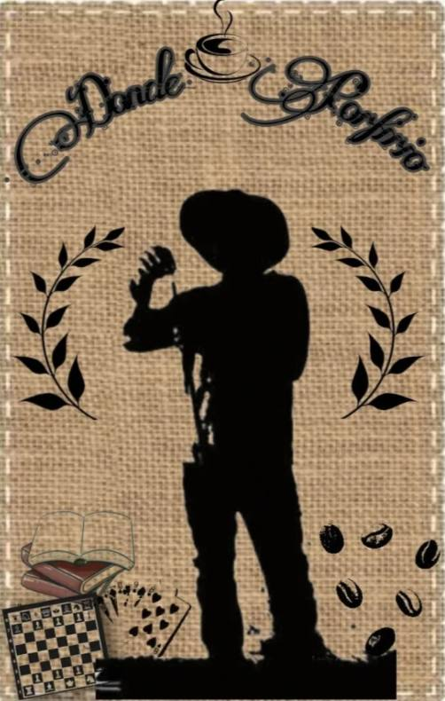
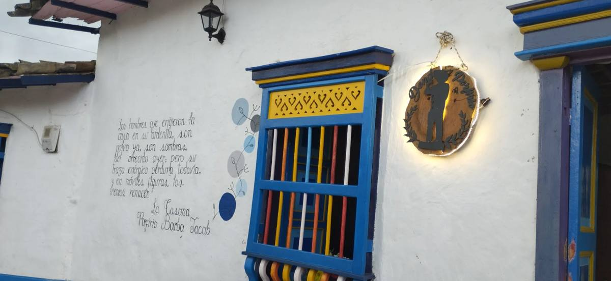
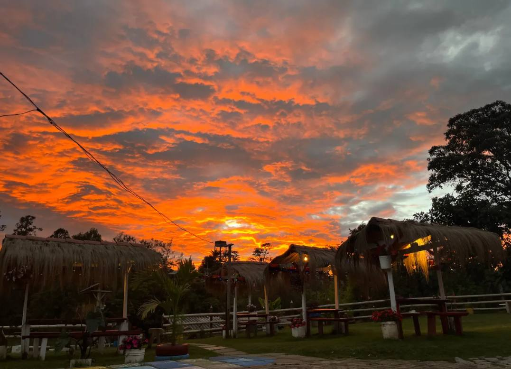

Tardes de poesía
Lecturas y encuentros alrededor de la obra del poeta.
Donde cada taza se convierte en poesía
Tienda café cultural en Hoyorrico, Santa Rosa de Osos, Antioquia. Café y comida de la región, tertulias y el legado del poeta Porfirio Barba Jacob.

Un espacio para encontrarse, aprender y recordar, donde la gastronomía local se mezcla con la historia literaria de la región. Aquí llegan familias, turistas y quienes buscan cultura.
Café y comida de la región, preparados al momento con insumos de la zona.
Tertulias, exposiciones y visitas guiadas sobre Porfirio Barba Jacob.
Ambientes para compartir en familia y con amigos. También es pet friendly.
Precios en pesos colombianos (COP).
La casona de Porfirio Barba Jacob es el centro de una agenda cultural pensada para toda la familia.
Lecturas y encuentros alrededor de la obra del poeta.
Conversación para jóvenes y adultos con interés en la cultura.
Actividades para que los más pequeños se acerquen a la lectura.
Recorrido por la historia del poeta y de la casona.


Desde que preguntas por el lugar hasta que vuelves, queremos que la experiencia sea cálida y clara.
Información clara sobre la carta, los servicios y la experiencia del lugar, para que planees tu visita.
Atención personalizada y familiar, en mesa y en barra. Todo se prepara al momento, con altos estándares de calidad.
Programa “Cliente Frecuente” y ganas de volver. Tu reseña en Google Maps y TripAdvisor nos ayuda a seguir creciendo.
Zona cultural, espacio de lectura, mesas bajo cobertizos en el jardín y ambiente pet friendly.
Productos to-go en empaque compostable.
Familias de la región, turistas nacionales y extranjeros que llegan a Hoyorrico, y jóvenes y adultos interesados en la cultura.
Café, alimentos y panadería de productores y emprendimientos de la región.
Trabajamos con agencias de viajes de Antioquia, operadores del Norte antioqueño, Comfama y Comfenalco.
Casa de la cultura, bibliotecas, entidades educativas y la Alcaldía municipal con su Secretaría de Cultura y Turismo.
Estamos en Hoyorrico, Santa Rosa de Osos, en el Norte de Antioquia.
Dirección
Hoyorrico, Santa Rosa de Osos, Antioquia, Colombia